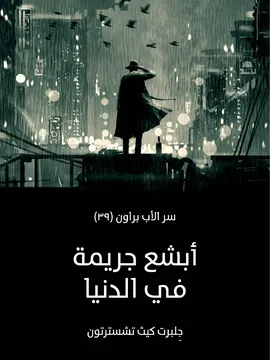

أبشع جريمة في الدنيا : سر الأب براون (٣٩)

قراءة عربية أصلية محددة النطاق في الصفحات 9 إلى 14 من ملف PDF المرتبط، وليست تلخيصا كاملا للكتاب. نناقش ما تدعمه هذه المقاطع فقط.
جريمة وراء طلب قرض، وعين الأب براون لا تخطئ
في مكتب المحامي جرانبي ينكشف لغز يسبق الجريمة: النقيب موسجريف يريد أن يقترض مبلغًا كبيرًا على أن يُرد من ميراثه بعد وفاة والده المسن في نورثمبرلاند، والعجوز تخطى السبعين ولم يُحسم بعد أمر من تئول إليه التركة العريقة من قلعة وبوابة منزلقة وجسر متحرك. يعترف جرانبي بأن الرجل المسن سريّ وذو أهمية كبرى في القضية وأنه لا يعرفه، وهذه هي المشكلة، فيقتاد صديقه إلى غرفة جانبية خالية من الناس نسبيًا ويخفض صوته: هذا الشاب يريد أن يقترض منا مبلغًا ماليًا كبيرًا، فهل هو ودود تجاه ابنه؟ يجيب الأب براون بهدوئه المعهود: إذا كان ودودًا فستدرك ذلك، لكنه لم يقابل السير جون قط، ويعرف أنه لا يلتقي سوى قلة قليلة من الناس، أما ابنه الصحفي فمحبوب وذكي وذو مكانة عظيمة، لكنه يُغير مهنته باستمرار: صحفي ومحاضر وممثل، ويمتهن كل المهن تقريبًا. وما إن يظهر الشاب الطويل الحسن الهندام حتى تبدأ حواف الجريمة التي سماها تشسترتون أبشع جريمة في الدنيا في الظهور، في سلسلة سر الأب براون التاسعة والثلاثين. ترجمة أحمد سمير درويش.
زاوية وحدود القراءة
قراءة موجزة من ص ٩ إلى ص ١٤ من أصل ٢٤ صفحة، تعرض مشهد استشارة المحامي للأب براون في قضية القرض والميراث، لا الكتاب كاملًا.
الطبعة والقراءة
هذه الترجمة العربية صادرة ومتاحة مجانًا من مؤسسة هنداوي بشكل قانوني؛ حيث إن نص العمل الأصلي يقع في نطاق الملكية العامة تبعًا لقوانين الملكية الفكرية.
تنزيل PDF المجاني ↓ القراءة والمصدر الرسمي ↗